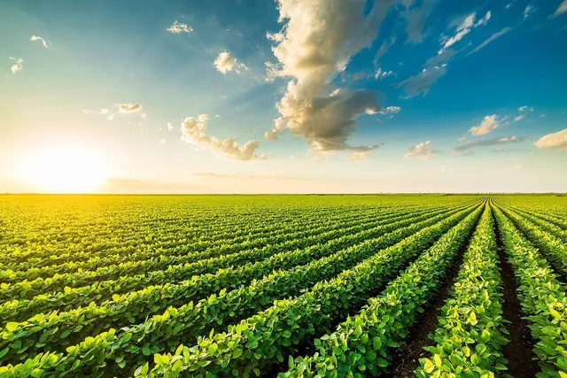
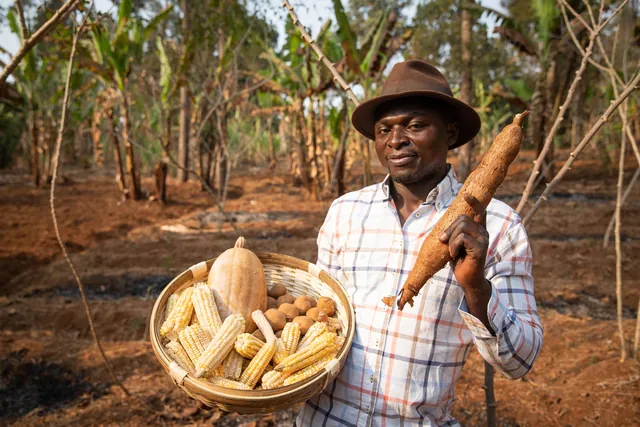

Crop cultivation
Growing healthy crops on cultivated land, from planting and care through to harvest.
Sustainable farming
Crop cultivation, livestock production and the supply of fresh farm produce, with a commitment to food security and the communities we serve.
About us
Our agro farm is committed to producing quality agricultural products through sustainable farming practices. We focus on crop cultivation, livestock production, and the supply of fresh farm produce.
Our goal is to promote food security, create jobs, support local communities, and build a profitable agribusiness that meets growing food demands.
From the field to your table: growing food responsibly for today and the seasons ahead.
What we do

Growing healthy crops on cultivated land, from planting and care through to harvest.
Raising healthy animals in clean, well-kept surroundings, with care for their welfare.

Supplying fresh, carefully handled produce to households, traders and businesses.
Products
Tap "Enquire" to ask about availability and current prices on WhatsApp.
Gallery
News
Contact
Buyers, partners and anyone curious about the farm are welcome to get in touch.